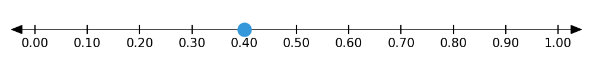

1.4 – Fractions, Decimals & Percents
Fractions, decimals, and percents are just different ways of showing the same thing — a part of a whole. Whether you’re splitting a pizza, measuring a distance, or shopping during a sale, these numbers are everywhere.
In this lesson, you’ll learn how to move between these forms and understand how they relate to each other. We’ll build on what you already know about simplifying fractions to make conversions easier.
üî• Warm-Up
Which one doesn’t belong?
- \(\frac{1}{2}\)
- 0.25
- 50%
- 0.5
(Explain your reasoning. There’s more than one right answer.)
You drink half a bottle of water. Your friend drinks 60% of a bottle. Who drank more?
Which two of these do you think are closest in value?
- \(\frac{2}{3}\)
- 70%
- 0.25
- \(\frac{3}{4}\)
üë• Learn Together
1.4.1 – What Are Fractions, Decimals, and Percents?
Fractions, decimals, and percents are all ways of showing a part of a whole.
- A fraction shows how many parts out of a total (e.g. \(\frac{2}{5}\) = 2 out of 5 equal parts).
- A decimal uses place value and powers of 10 (e.g. 0.4 = 4 tenths).
- A percent means “per 100” — it’s like a fraction with a denominator of 100 (e.g. 25% = \(\frac{25}{100}\)).
Let’s look at one example in all three forms:
| Name | Example | Meaning |
|---|---|---|
| Fraction | \(\frac{1}{2}\) | 1 out of 2 parts |
| Decimal | 0.5 | 5 tenths |
| Percent | 50% | 50 out of 100 parts |
These are all equivalent – they mean the same thing, just written in different ways.
Here’s another example:
All of the following represent the same value: \(\frac{2}{5}\) = 0.4 = 40%.



Each image shows a part of a whole in a different way — but they all represent the same quantity.
1.4.2 – Converting Fractions to Decimals
To convert a fraction to a decimal, divide the numerator by the denominator.
Let’s try:
\[ \frac{3}{4} = 3 \div 4 = 0.75 \]
Use a calculator if needed!
Try these:
- \(\frac{1}{2} = 1 \div 2 = \_\_\_\)
- \(\frac{2}{5} = 2 \div 5 = \_\_\_\)
- \(\frac{1}{8} = 1 \div 8 = \_\_\_\)
Some fractions turn into decimals that stop (terminate), and some repeat forever.
| Fraction | Decimal |
|---|---|
| \(\frac{1}{4}\) | 0.25 |
| \(\frac{1}{3}\) | 0.333… |
| \(\frac{2}{3}\) | 0.666… |
| \(\frac{1}{5}\) | 0.2 |
If the decimal repeats, we write a bar over the repeating part: \(\frac{1}{3} = 0.\overline{3}\)
1.4.3 – Converting Decimals to Percents
To turn a decimal into a percent, multiply by 100 (move the decimal two places right) and add a percent sign:
- \(0.5 \rightarrow 50%\)
- \(0.75 \rightarrow 75%\)
- \(0.08 \rightarrow 8%\)
Try this: What percent is 0.6?
\(0.6 \times 100 = 60%\)
1.4.4 – Converting Percents to Decimals and Fractions
To convert a percent to a decimal, divide by 100 (move the decimal two places left):
- \(75% \rightarrow 0.75\)
- \(20% \rightarrow 0.20\)
- \(5% \rightarrow 0.05\)
To write it as a fraction, think of the percent as “out of 100,” then simplify if possible:
- \(75% = \frac{75}{100} = \frac{3}{4}\)
- \(20% = \frac{20}{100} = \frac{1}{5}\)
- \(5% = \frac{5}{100} = \frac{1}{20}\)
1.4.5 – Using a Conversion Triangle
Here’s a quick triangle you can draw to help you remember how to switch between all three forms.
Fraction
/ \
/ \
Decimal <––> Percent- Fraction → Decimal: divide top ÷ bottom
- Decimal → Percent: × 100
- Percent → Decimal: ÷ 100
- Fraction → Percent: Convert to decimal first, then multiply by 100
1.4.6 – Benchmark Values
Some conversions are so common that it helps to memorize them. These are called benchmark values:
| Fraction | Decimal | Percent |
|---|---|---|
| \(\frac{1}{2}\) | 0.5 | 50% |
| \(\frac{1}{4}\) | 0.25 | 25% |
| \(\frac{3}{4}\) | 0.75 | 75% |
| \(\frac{1}{3}\) | 0.333… | 33.3% |
| \(\frac{2}{3}\) | 0.666… | 66.6% |
| \(\frac{1}{5}\) | 0.2 | 20% |
| \(\frac{1}{10}\) | 0.1 | 10% |
✍️ Practice On Your Own
Conversions Practice
Convert each fraction to a decimal:
- \(\frac{1}{2}\)
- \(\frac{2}{5}\)
- \(\frac{3}{4}\)
- \(\frac{1}{8}\)
- \(\frac{2}{3}\)
Convert each decimal to a percent:
- 0.4
- 0.75
- 0.125
- 0.01
- 0.6
Convert each percent to a fraction (in simplest form):
- 50%
- 25%
- 80%
- 12.5%
- 5%
Convert each percent to a decimal:
- 15%
- 30%
- 0.5%
- 66%
- 3.5%
Real-World Problems
A store is offering 25% off all items. If a shirt costs $20, how much is the discount? What’s the sale price?
A survey shows that 60% of students like pizza. If 120 students were asked, how many said they like pizza?
A recipe calls for 0.75 cups of sugar. Write this as a fraction and as a percent.
A basketball player makes 18 out of 24 free throws. What fraction of shots did they make? Write it as a percent.
Challenge Problems
Write a fraction that equals 0.625 and simplify it.
A student scored 36 out of 45 on a quiz. What percent did they get?